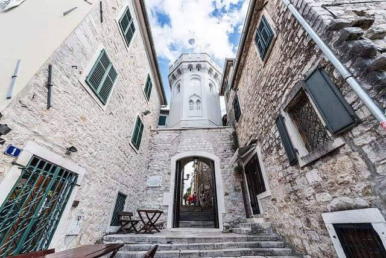
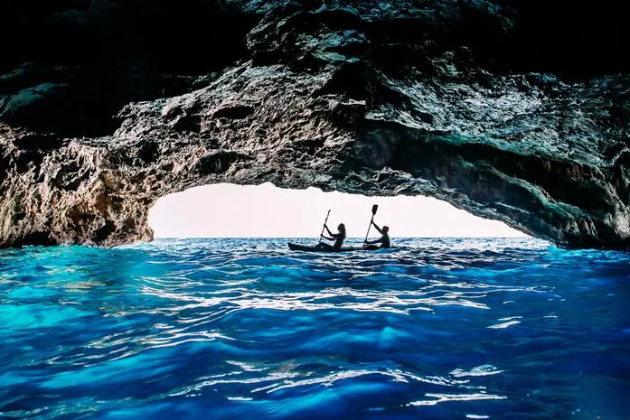

10 razloga zašto biste trebali odabrati Igalo - Herceg Novi - za svoj sledeći odmor
Tražite savršeno mesto za svoj sledeći odmor? Razmislite o Igalu! Ovaj grad u Crnoj Gori ima mnogo toga da ponudi, uključujući prelepe plaže, bogatu istoriju, kulturne događaje, sport i rekreaciju, spa i wellness, ukusnu hranu i piće, lepo vreme, povoljne cene, lepu prirodu i blizinu drugih turističkih destinacija. Ovaj tekst donosi 10 razloga zašto biste trebali odabrati Igalo za svoj sledeći odmor. Pročitajte više i saznajte zašto je Igalo fantastičan izbor za vaš odmor!

1 Plaže za svačiji ukus
Plaže u Igalu su jedne od najlepših na Crnogorskom primorju. Bilo da tražite plažu sa peskom ili stenama, sa dosta zabave ili mira i tišine, u Igalu ćete naći nešto za sebe. Topla i kristalno čista voda Jadranskog mora, u kombinaciji sa malim uvalama, daju čaroban doživljaj boravka na plažama u Igalu.
2 Klima
Igalo je grad smešten u Crnoj Gori, na obali Jadranskog mora. Klima u Igalu je mediteranska, što znači da su leta topla i suva, a zime blage i vlažne. Prosečna godišnja temperatura u Igalu iznosi oko 16°C. Leta su u Igalu topla i sunčana, sa prosečnom temperaturom vazduha od oko 25-30°C. Najtopliji meseci su jul i avgust. Tokom leta u Igalu ima malo kiše, a more je toplo i prijatno za kupanje. Noći su takođe prijatne i tople, sa temperaturom koja se retko spušta ispod 20°C. Zime u Igalu su blage i vlažne, sa prosečnom temperaturom od oko 10-12°C. Najhladniji meseci su januar i februar. Kiša je česta, a sneg je redak. More se tokom zime hladi, ali temperatura se retko spušta ispod 15°C. U proleće i jesen temperature su umerene, sa prosečnim temperaturama od oko 15-20°C. Ovi periodi su idealni za posete Igalu ako ne volite previše vrućine, a želite da izbegnete gužve turista. Uz obilje sunca, Igalo ima i visok nivo vlage, posebno tokom zime. Takođe, važno je napomenuti da je Igalo poznat po jakim vetrovima, što može uticati na prijatnost boravka u ovom gradu. Stoga je uvek dobro proveriti vremensku prognozu pre posete Igalu.
3 Bogata istorija
Igalo ima dugu i bogatu istoriju, sa mnogim zanimljivim pričama i legenadama. Ovaj grad je u prošlosti bio pod vlašću Rimljana, Turaka i Austro-Ugarske, a tragovi ovih kultura i dalje se mogu videti širom grada.

4 Zdravlje i wellness
Igalo je poznat kao jedno od najboljih mesta za lečenje reumatskih oboljenja i povreda. Ovaj grad ima prirodni lekoviti faktor, što ga čini idealnim mestom za oporavak. Pored toga, u Igalu možete pronaći brojne wellness centre i spa centre gde možete uživati u tretmanima lekovitog blata i drugim wellness tretmanima.

5 Gastronomija
Crnogorska kuhinja je bogata i raznolika, a u Igalu ćete imati priliku da probate mnoge specijalitete iz ove kuhinje. Od sveže ribe i morskih plodova do lokalnih sireva i mesnih proizvoda, hrana u Igalu će zadovoljiti svačiji ukus.
6 Noćni život
Ako tražite avanturu, Igalo ima puno toga da ponudi. Možete uživati u raznim aktivnostima na otvorenom, kao što su kajaking, ronjenje, planinarenje i biciklizam.
7 Aktivnosti na otvorenom
Iako je Igalo maleni grad, noćni život je itekako živahan. Postoji mnogo barova, klubova i restorana gde možete uživati u večernjoj zabavi.
8 Povoljne cene
Kada je u pitanju odmor, cene mogu biti prilično visoke, ali u Igalu to nije slučaj. Ovaj grad nudi širok izbor smeštaja za svaki budžet, tako da ćete sigurno naći nešto što odgovara vašim potrebama. Takođe, hrana i piće su relativno jeftini, tako da možete uživati u ukusnoj hrani i piću bez da osetite veliki pritisak na vaš novčanik.
9 Lepa priroda
Igalo je okružen predivnom prirodom, a najlepši prizori se nalaze duž obale. Pejzaži u ovom regionu su prelepi, sa kristalno čistim morem i zelenim brdima u pozadini. Idealno je mesto za fotografisanje ili samo uživanje u prirodi.
10 Blizina drugih turističkih destinacija
Igalo je savršeno mesto za boravak ako želite da istražite druge delove Crne Gore, kao što su Herceg Novi, Kotor ili Budva. Svi ovi gradovi su lako dostupni, a putovanje između njih traje samo nekoliko sati.
Kao što vidite, Igalo je fantastično mesto za odmor, sa mnoštvom stvari koje će vam pružiti uzbudljivo iskustvo. Od prelepih plaža i ukusne hrane do istorije i prirode, Igalu ima mnogo toga da ponudi. Ako tražite savršeno mesto za opuštanje, zabavu i istraživanje, Igalo je definitivno mesto koje treba posetiti!
Više informacija na sajtu Turističke Organizacije Herceg Novi